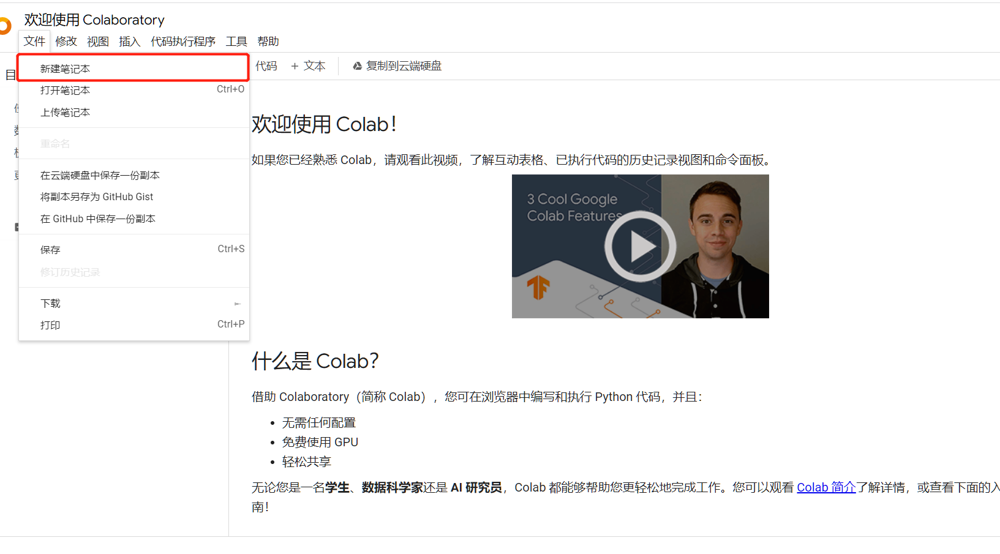
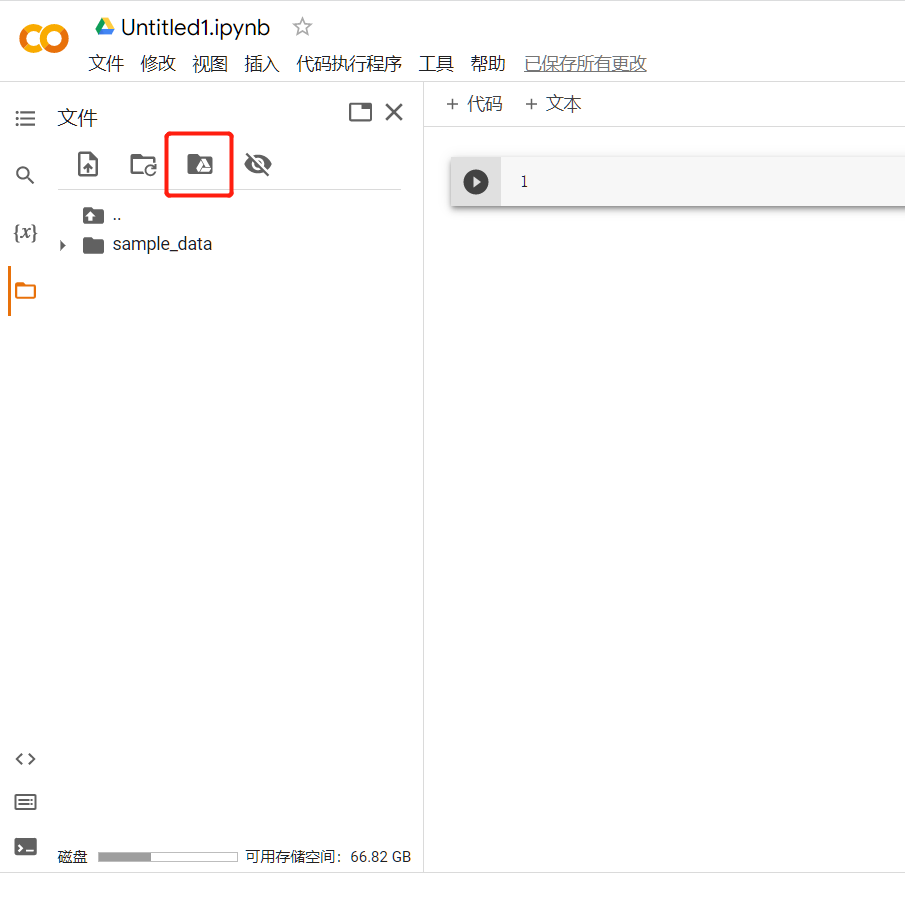
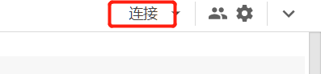
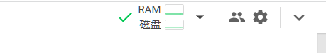

一、算力从哪里来？
曾听到过这样一种说法，深度学习 “自学 + 没经费 = 天坑”。不幸的是我似乎正处于这种状态中。自学的方面还比较好克服，可没有 gpu 进行训练就 “难为无米之炊” 了。就算理论学得再好，自己构建的模型电脑带不动，没有实践的机会，也是难以学好这门学科的。
最近我正开始学着实现更大的模型，我的笔记本此前的小模型还可以勉强撑住，可现在却完全带不动了。一方面，训练的时间太长，挤占了我使用笔记本做其他事的时间；另一方面，我的 gpu 显存太小，不能调大参数，可参数较小时又无法收敛。这就是我面临的双重两难问题。
我希望找到一处租用算力的平台。它应该同时满足如下的条件
- 算力丰富，能快速训练模型
- 对用户友好，和本机环境差别不大，能够迅速上手训练模型
- 费用便宜，最好有免费的算力
综合以上各点，通过搜索，我找到了 Colab。Colab(oratory) 是一个 Google 研究项目，旨在帮助传播机器学习培训和研究成果。它是一个 Jupyter 笔记本环境，不需要进行任何设置就可以使用，并且完全在云端运行。Colab 笔记本存储在 Google 云端硬盘中，并且可以共享。利用Colaboratory ，可以方便的使用Keras, TensorFlow, PyTorch, OpenCV 等框架进行深度学习应用的开发。最重要的是，Colab 可免费使用。
二、Colab基本操作
（1）创建笔记本
在正式介绍 Colab 之前需要说明一点，使用 Colab 需要科学上网。
要新建 Colab 需要创建笔记，笔记是 Colab 编辑文本、代码和运行程序的地方。使用过 jupyter notebook 的人应该很了解。不同笔记之间内容互不相通，可以把每一个笔记看做一台独立运行的虚拟机。
Colab 是谷歌的产品，因此需要实现注册好一个谷歌账号。
通过 Google Drive 创建笔记本
Google Drive 是 Google 的一款云端硬盘，操作与其他云盘，如百度网盘、阿里云盘，类似。
通过 Google Drive 可以创建 Colab 笔记。方式是：点击左上角的“新建”按钮或右击背景 => 在弹出的窗口中选择“更多” => 选择 “Google Colaboratory” 选项。
通过 Colab 创建笔记本
还有另一种方式，直接访问 Colab 网页。
在欢迎页处点击左上角，文件 => 新建笔记本即可创建。

（2）装载 Google Drive
讲解两种创建方法的原因，是指出 Colab 和 Google Drive 可以进行信息交互。Colab 笔记本身存储在 Google Drive 中，而 Google Drive 中的其他内容也可以被 Colab 笔记访问。另外，因为 Colab 虚拟机中的内容只在会话中保存，因此将数据集和训练过的模型存储在 Google Drive 也是必要的。
我们要建立 Colab 到 Google Drive 的连接。方法是点击左侧边栏文件夹图标 => 点击如下图标

随后会在笔记本中创建如下的代码段
from google.colab import drive
drive.mount('/content/drive')
运行这段代码（点击左侧“播放”按钮），随后点击新出现的内容中的url，按指示进行授权即可。
成功后，我们可以看到文件夹目录中多出了一个文件夹，其中即为 Google Drive 的内容。我们可以像对其他目录一样，直接用路径访问 Google Drive 中的文件。
（3）Jupyter 笔记本
Jupyter Notebook 是一款应用程序，以网页的形式打开，可以在网页页面中直接编写代码和运行代码，代码的运行结果也会直接在代码块下显示。Colab 也使用了 Jupyter Notebook 作为编写代码的途径。下面简单介绍一下（Colab的） Jupyter 笔记本的使用。
Jupyter Notebook 中有两种单元格，其一是文本格、其二是代码格。文本格支持 markdown 语法，可以方便地进行排版。
代码格中能够编写代码，除了 python 外也支持其他语言，但使用 python 的为多。值得强调的是 Jupyter Notebook 中代码的执行方式。在 Notebook 中，代码被划分在不同的单元格中，每个单元格中的代码都可以单独执行，不需要考虑顺序，每个单元格也可以多次重复执行。唯一的约束是跨越单元格使用的变量、方法、类等等，应该先执行其声明，再执行其引用。当然，这是十分合理的要求。
可以看出，Jupyter Notebook 和 python 的命令行模式有相似之处。
（4）命令行
有时我们不止需要编写文本和代码，还需要进行系统的操作，这就需要执行系统命令。Colab 中提供了执行命令的方法：可以在代码格中输入命令，只需要在命令之前加上叹号 ! 即可。例如
!ls -a
（5）管理会话
必要性
我们已经知道了如何使用 Colab 编写代码、执行命令并持久地保存数据。这对于操作一台虚拟机来说已经足够了。在这一小节中，要讨论的是另一个问题，如何节省算力资源？
Colab 有免费的算力，但这是有限的。在资源不紧张的情况下，Colab 允许免费使用 gpu，但一旦资源紧张或者你占用了太多的资源，Colab 就可能在一段时间内禁止你使用 gpu。因此算力需要节省使用。
Colab 中，“会话” 指 Colab 前端到算力平台的连接。每当某一个笔记运行程序时，都会创建会话。会话一般不会自行结束（除非超过了24小时未使用），如果忘记关闭的会话恰好连接了一个 gpu，那么造成的算力浪费将是惊人的。
说道这里，恰好解释一下会话的不同类型。会话分为 cpu、gpu 和 tpu。cpu 的会话几乎不会消耗资源（消耗得很少）；gpu 和 tpu 的会话则会消耗资源，并且根据使用的 gpu 和 tpu 类型的不同，消耗资源的速度也不同。
方法
因此，我们可以在平时编写代码时只连接 cpu，而到了训练时才连接 gpu 或 tpu。这需要进行会话的切换，具体方法如下：
新建笔记，我们可以在笔记的右上角看到下图红色框所指示的按钮。点击该按钮，或者运行某一段代码，就会使笔记连接到服务器。会话的类型由设置决定，如果是第一次使用，则连接的便为 cpu。

连接成功后，图标变为类似下图的样子。

点击旁边的小箭头，会弹出更多选项。
- 连接到托管运行时，为使用谷歌的资源
- 连接到本地运行时，为使用本机的资源
- 断开连接，将删除当前的会话，当然在会话中创建的文件等内容也会一并消除，需要事先移动到 Google Drive 中。
更重要的是更下面的选项
-
查看资源，点击后出现如下的窗口，点击 “更改运行时类型” 即可选择会话的类型。点击 “管理会话” 和选项 “管理会话” 的结果相同。
在连接成功后点击图标，同样能显示此窗口，但这时再更改运行时类型，只会创建一个新的会话。因此应该在连接断开时更改。
-
管理会话，点击后显示正在进行的会话。太多不使用的会话会占用更多的资源，可以点击右侧垃圾桶图标结束会话。
通过合理地创建会话和结束会话，可以做到资源利用的最大化。
三、Colab训练神经网络
虽然 Colab 笔记能编写代码，但是代码组织在同一个文件中，同时难以调试，很不方便。
使用 Colab 训练神经网络比较好的方法是在本地把代码跑通；把代码和数据集打包上传到 Google Drive 中；随后 Colab 装载 Google Drive，并通过命令执行 python 代码文件。
!python "/content/drive/train.py"
训练神经网络时经常使用 tensorboard，在 Colab 中也可以使用。只需要在代码块中执行如下两条：
%load_ext tensorboard
%tensorboard --logdir="/content/drive/logs"
四、购买算力和订阅
有时，Colab 提供的免费算力依旧不够用，这时就需要购买额外的算力了。在资源窗口中点击 “升级到 Colab Pro” 或在设置中选择 “Colab Pro” 选项。即可跳转到购买界面。可以选择只购买计算单元或是每月订阅。
需要注意的是，Colab 只支持信用卡支付。对一些学生来说，这可能不太方便。一种解决办法是使用虚拟信用卡。这一部分和本文关系不大，上网可以搜索到相关资料，因此不详细说明。